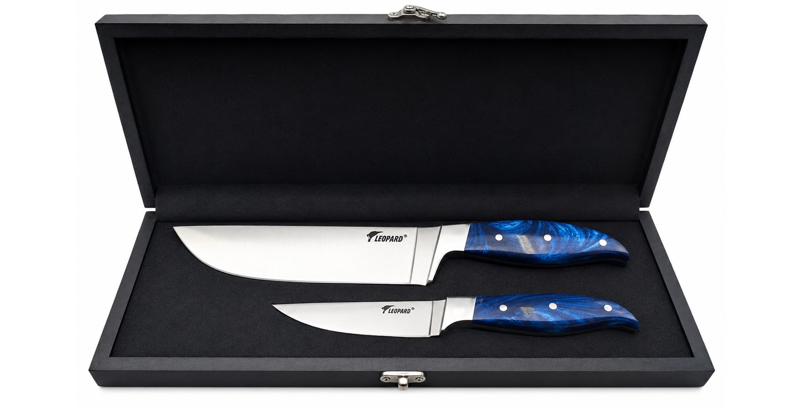

Handmade in Sialkot · Resin Handle · Pakistan
Handmade resin handle chef knife — no two alike.
Sapphire-blue acrylic resin, hand-poured at our Sialkot workshop. Each handle flows differently — same mould, different result, every time. Full-tang 8-inch chef knife and matching paring knife, mirror-polished, in a satin-lined black gift box. PKR 6,700. Free delivery across Pakistan.

- Each handle hand-poured — no two identical
- Waterproof, non-porous, hygienic
- Full-tang high-carbon stainless steel
- Gift-boxed · PKR 6,700 · Free delivery
The resin handle chef knife set.
The Sapphire Set — sapphire-blue resin. Or choose the Teak Set for natural wood handles.
Why a resin handle chef knife is different.
Most knife handles in Pakistan are plastic or a generic wood laminate. Our sapphire-blue handles are cast from acrylic resin — poured by hand into the handle mould, allowed to cure, then shaped, polished and triple-riveted to the full-tang blade. The resin captures light differently at every angle. No two handles have the same depth of colour, the same swirl, the same pattern. Your set is the only one like it.
Resin is also one of the best handle materials for daily kitchen use. Non-porous — it never absorbs water, bacteria or food smells. Extremely durable — it does not crack, warp or dry out like wood. Easy to clean. Beautiful for years without any maintenance.
The only handmade resin handle chef knife in Pakistan.
We are not aware of any other kitchen knife manufacturer in Pakistan producing a resin handle chef knife set. This is not a product you find on Daraz or in a mall. It is made at Pakistan Knife Factory in Sialkot — the same city that has forged blades for generations — and shipped directly to you. PKR 6,700. Free delivery anywhere in Pakistan. No middleman.
Resin handle chef knife Pakistan — questions
Where can I buy a resin handle chef knife in Pakistan?
Pakistan Knife Factory (PKF) in Sialkot is the only manufacturer producing a hand-forged resin handle chef knife set in Pakistan. The Sapphire Set features hand-poured sapphire-blue acrylic resin handles. PKR 6,700, free delivery anywhere in Pakistan.
Are the resin handles really unique on every set?
Yes — every handle is hand-poured individually. The resin flows and cures differently each time, creating unique patterns of colour and depth. No two sets are identical. This is a genuinely handmade piece.
Is resin a good material for kitchen knife handles?
Yes — acrylic resin is waterproof, non-porous, hygienic and highly durable. It does not absorb moisture or bacteria, does not warp or crack, and requires no maintenance. Better than most wood handles for daily kitchen use.
Is this the Sapphire Set I can see on the main shop page?
Yes — the Sapphire Chef Knife Set is our resin handle model. You can view its full product page here. The Teak Set uses natural teak wood handles as an alternative.
Is the blue resin handle chef knife a good gift?
Yes — it is one of the most distinctive gifts available in Pakistan. Striking, unique, presented in a satin-lined black gift box. Perfect for a housewarming, wedding or Eid gift. PKR 6,700 all-in, free delivery.